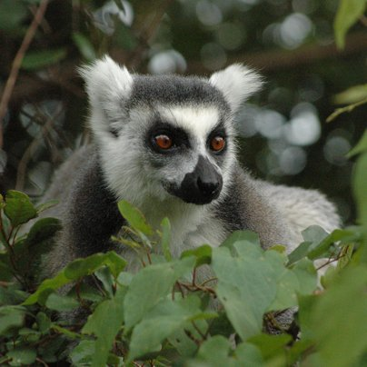
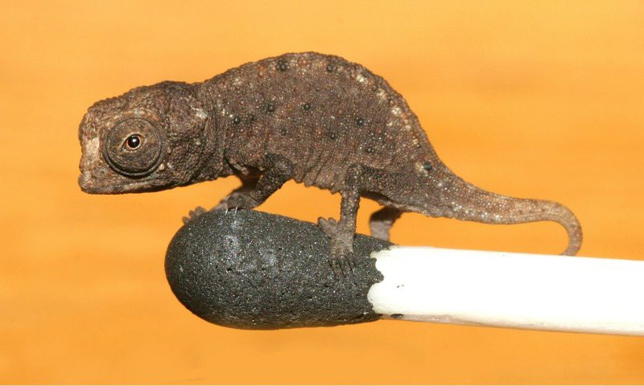
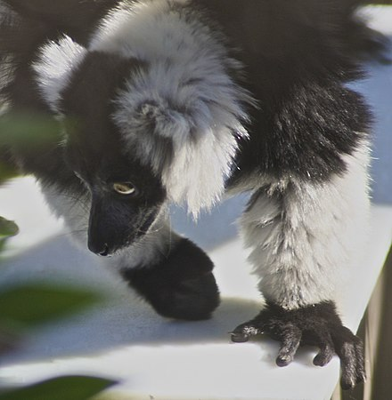

La faune de Madagascar
Auparavant, Madagasikara est appelé l'île vert mais à cause de la deforestation et la pratique de la culture sur brûlis la grande île devient l'île rouge.
Suite à la deforestation plusieurs animaux ,comme les lémuriens(eulemur,...),les caméléons (brookessia,..) etc, y vivent sont en danger.



